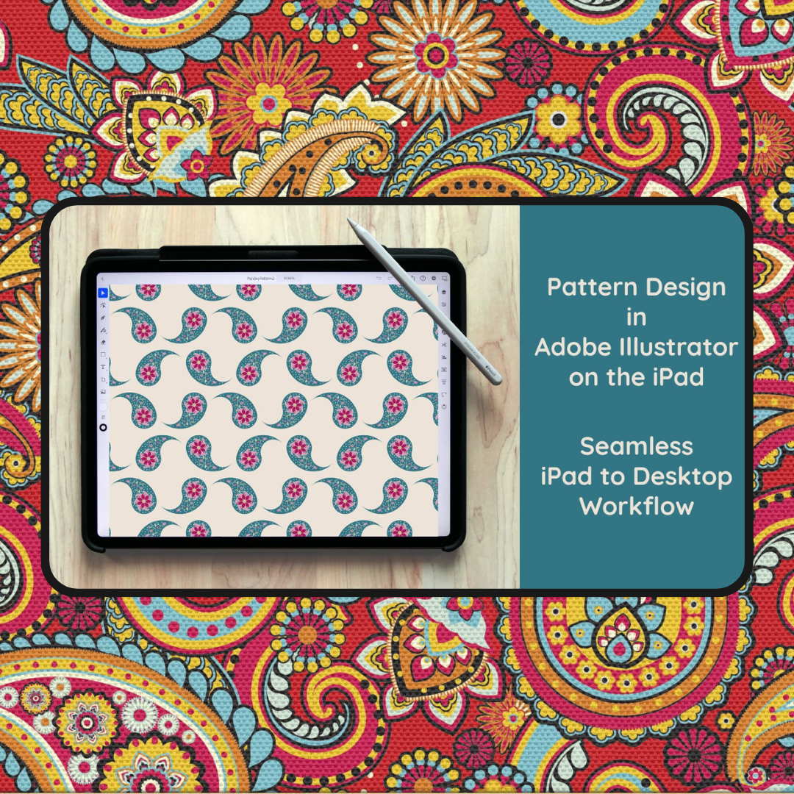

Happy Friday to all our fashion aficionados! With the air turning crisp and the allure of haunted happenings upon us, there's no better time to draw inspiration from the season. This weekend, as the ghouls and goblins roam the streets, channel that same eerie energy into your wardrobe choices and design aspirations.
Speaking of seasonal shifts, here's a little fashion forecast for you: ballet flats are twirling back into the spotlight! But don’t expect just the plain Jane variety. Autumn 2023 is setting the stage for ballet flats adorned with audacious patterns, tactile textures, and sultry ankle ties. It’s a harmonious dance of snug meets style.
So, as the amber leaves whirl around and the breezes become brisk, let nature's own runway invigorate your fashion spirit. Dive deep into autumn's embrace and let it direct your sartorial selections. Here’s to a season of fashion that's as spellbinding as the spookiest of tales!
Cultural UX Chronicles: Bridging Traditions with Digital Design
In the ever-evolving world of UX design, inspiration is drawn from countless sources. But one of the most profound and intriguing inspirations comes from our rich tapestry of global cultures. These deep-rooted traditions and aesthetics not only tell tales of our past but also shape the digital interfaces we interact with today.

The paisley pattern, characterized by its iconic teardrop shape, has long been a symbol of life and eternity in Indian and Persian cultures. Originating centuries ago, it adorned everything from royal robes to artisan rugs, capturing hearts with its intricate design and deep cultural significance.
Now, we're able to witness how this ancient motif gracefully finds its place in the digital realm. Modern apps are embracing the paisley's enduring beauty, integrating it into their interfaces. It's not just an aesthetic choice; it's a nod to a legacy, adding richness and a touch of tradition to our daily digital interactions.
This is just one of the many ways cultures and traditions influence the world of UX design. As we continue our journey in the Cultural UX Chronicles, we'll explore more such fascinating intersections where tradition meets technology, reminding us that design, at its heart, is a celebration of human history and creativity.